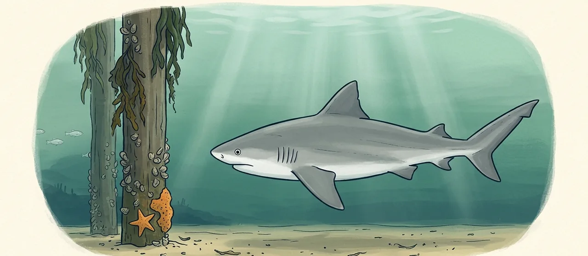
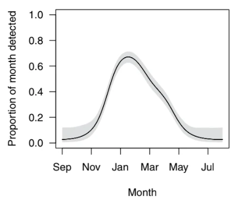
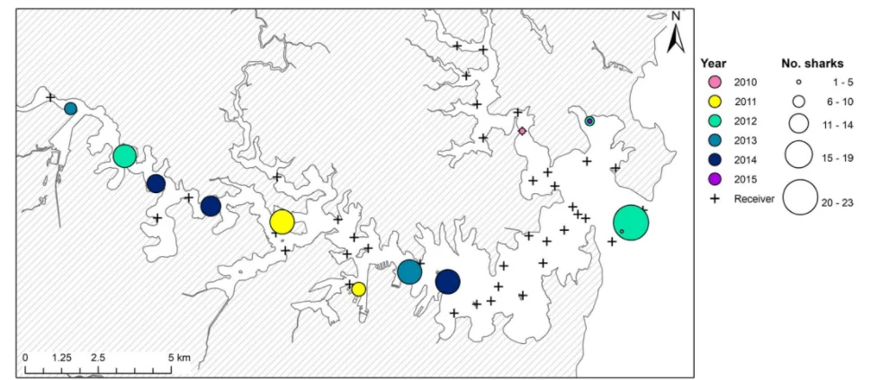
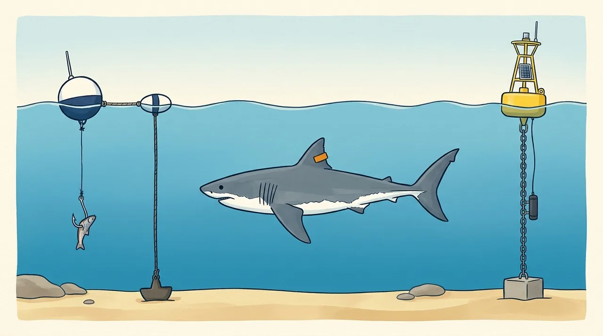

Do bull sharks live in Sydney Harbour? They visit, every summer, and the tagging studies now say when, where and why. This page gathers those studies, the catch reports and the incident records. Every figure is linked to its source at the bottom.
First written in July 2021 and reviewed then by Dr Amy Smoothey, fisheries scientist at the NSW Department of Primary Industries, whose team did most of the work described here. Rebuilt in November 2026 with new studies, charts and the events of January 2026. The new material has not been reviewed by her.
A possible guidance during those months: between November and May, I would not swim in the harbour outside netted enclosures, especially in Middle Harbour as well as in the harbour west of Clifton Gardens. Popular beaches and dive sites like Manly harbourside, Clifton Gardens and Camp Cove have regular swimmers and scuba divers in summertime, and the lack of interactions or underwater sightings gives some statistical confidence (at least till a first incident occurs).
Outside that season, I have been diving over 100 times in the harbour (up to Greenwich Point) and Middle Harbour (up to Bantry Bay), covering long distances with a sea scooter, from the shallows to the 48 m of Blues Point, day or night, and never came across any bull shark, nor have I ever met divers or snorkellers who have positively identified or photographed one, at any time of the year. That said, the risk is never zero, but if we are really keen to swim or dive anywhere in the harbour, at least we can help our luck by choosing the right season.
Marco Bordieri, July 2021, updated November 2026. This is one diver's opinion.
The bull shark, Carcharhinus leucas, is a heavy, blunt-nosed shark that can live in fresh water as well as salt. It is born in a river, grows up there, and moves to the coast only when it is big. The ones that come to Sydney are adults.
Lengths: at birth about 0.8 m (Werry 2012); first heard on the coast at about 1.6 m (Smoothey 2023); the 40 sharks tagged in the harbour were 2.2 to 3.2 m (Smoothey 2019). The scale is the same as on the white shark page.
The nursery rivers with evidence are further north: the Clarence and the Richmond in NSW and the Nerang in Queensland, where newborns keep to the brackish upper reaches (Werry 2012). No study has found pups in Sydney Harbour, the Parramatta, the Georges or the Hawkesbury.
Between 2009 and 2013, NSW scientists fitted 40 bull sharks in the harbour with acoustic tags and listened for them until 2015. The sharks arrived mostly in January, were most numerous in January and February, and left in February and March. They were completely absent from July to October (Smoothey 2019).

At the peak, a tagged shark was heard on about two days in three. From July to October the curve sits on the floor: in six years of listening, no tagged shark was heard in those months.
The curve is for the sharks that were tagged, 40 adults of 2.2 to 3.2 m. It shows when bull sharks use the harbour, not how many there are.
Palm Beach to Cronulla, the open coast outside the harbour. Bull sharks turn up in the beach nets from December to March and have never been hooked on Sydney's ocean drumlines. Counted from the individual catch records in the NSW DPIRD annual reports. Small numbers: read the shape. Grey months have no net data at all.
Counted from Table 1 of Smoothey et al. 2019. It shows when sharks were there to be caught, and also when the team went fishing, so read it with the survey below.
A separate survey set 5,100 baited hooks in the harbour over 85 nights from 2010 to 2012, in all four seasons. It caught 12 bull sharks: 10 in summer, 2 in autumn, none in winter or spring (Smoothey 2016).
A tagged shark was heard in the harbour on about 27 days a year on average, and on as many as 105. Seven in ten came back in a later year, and more than a quarter came back every year they could (Smoothey 2019).
Each bar runs from the earliest arrival to the average date the last tagged shark was heard. Starts: before 2018 none arrived before November; the first October arrivals were in 2020 (18 October, the earliest on record) and 2023. Ends: the average last detection was 26 March in 2010–2011 and 12 April in 2023–2024, about one day later each year. The dashed line is the latest departure on record, 24 May 2013. The study found a clear trend in departures and none in arrivals. From 92 sharks and fifteen years of records. Source: Lubitz et al. 2025.
The water off Sydney warmed by about 0.6 °C over the years of the study. The earliest arrival on record was 18 October and the latest departure 24 May. The first October arrivals came in 2020 and 2023. A tagged shark stayed 61 days on average, and males left about three weeks after females (Lubitz 2025).
Another study expects the warm season along the NSW coast to lengthen by about three months by 2030 (Niella 2020).
Everywhere the receivers were: from Middle Harbour and North Harbour to the Lane Cove and Parramatta rivers. Two stretches stood out (Smoothey 2019).

The water around Garden Island, the Opera House and Kirribilli was one hotspot. It is the stretch where a Navy diver was bitten in Woolloomooloo Bay in February 2009, the event that started the tagging program.
The second hotspot is well up the Parramatta River. Hotspots were more likely where the water is shallow, under about 5 m on average, with a steep drop-off beside it.
Tagged sharks swam between the surface and 40 m, at 7.6 m on average. They kept deeper by day and came up at night. They were heard a little more often in the early afternoon than at midnight: 53% against 43%.
Unprovoked incidents attributed to bull sharks in the Sydney area, all years, by the kind of water. Source: Australian Shark-Incident Database, version of 2 Sep 2026; counted for this page.
Nobody has shown why. The studies rule one reason out, support a second, and leave a third as a guess.
This is the common belief, and the evidence is against it. No newborn or young bull shark has been caught in the harbour, and no shark caught there showed signs of recent mating, though one in the survey carried what looked like fresh mating scars. The pups are born in rivers further north, in spring and summer (Smoothey 2016; Smoothey 2019; Werry 2012).
Bull sharks keep to water of about 20 to 26 °C. In summer the East Australian Current carries that water down the NSW coast, and the sharks come with it. When the harbour cools below about 19 °C they are gone. Temperature explains when they can be here better than anything else measured (Lee 2019; Smoothey 2019; Lubitz 2025).
This is the researchers' best guess, and it is only that. Tagged bull sharks and tagged fish, bream and trevally among them, used the same shallow sandy bays, and both shifted together after heavy rain (Niella 2022). The team that studied the migration from the Great Barrier Reef suggests feeding, with breeding, is what makes some sharks travel (Espinoza 2016). Against it: a harbour diver sees few large fish, and nobody has examined what Sydney's bull sharks have eaten. A bull shark does not need large prey, since elsewhere it lives mostly on fish and rays, but that is not evidence about this harbour.
Whatever draws them, it works on the same animals each year: seven in ten tagged sharks came back to the harbour in a later summer.
Schematic, from acoustic tracking of bull sharks tagged in NSW and Queensland (Heupel et al. 2015; Lee et al. 2019; Lubitz et al. 2025). The coast is simplified. Not every shark makes the trip.
Nearly half of the bull sharks tagged in NSW were later heard in Queensland. Seventeen of them went from Sydney Harbour to the reefs off Townsville, 1,770 km away (Heupel 2015). A shark tagged on the Great Barrier Reef covered 1,400 km in 38 days (Espinoza 2016).
About half of the sharks tagged on the reef made the trip south, and all but one came back. The rest stayed in the tropics. Scientists call it partial migration, and think food and breeding decide who travels (Espinoza 2016).
The harbour's visitors are regulars. 70% of the tagged sharks returned at least once, and 28% in every year they could (Smoothey 2019).
Bull sharks are not only a harbour animal. A study of 233 tagged bull sharks and 21 listening stations off NSW beaches, from 2017 to 2023, found when they come close to the surf (Smoothey 2023).
These are the conditions in which tagged bull sharks were most often within about 500 m of a beach listening station. They describe when the sharks are there. The study did not measure how the sharks behave, or bites.
The authors, who include the NSW scientists behind the official advice, suggest changing the message for bull sharks from "dawn and dusk" to afternoon and low-light periods, night included.
The harbour tagging study found no effect of rain on where the sharks were (Smoothey 2019). A later study found that after heavy rain in the catchment males moved upstream within a day and females after four (Niella 2022). The link is firm for beaches and river mouths, and less settled inside the harbour.
Three people were bitten in Sydney in two days after heavy rain: a swimmer at Vaucluse on 18 January, who died, and on 19 January a surfer at Dee Why, whose board was bitten, and a surfer at North Steyne, who was badly hurt. NSW fisheries scientists called each a likely bull shark and could confirm none. They described the harbour water as brackish after the rain and runoff, with poor visibility.
The Australian Shark-Incident Database, kept by Taronga, records every known case back to 1791. The counts below are unprovoked incidents, to June 2026. An incident includes cases where nobody was hurt. The charts open on bull sharks; pick another shark to compare.
All years on record. Bull shark incidents crowd into December and January, when the sharks are in the harbour and so are the swimmers. Source: Australian Shark-Incident Database, version of 2 Sep 2026; counted for this page.
Each coloured block carries its count. The area runs from Palm Beach to Cronulla and takes in the harbour, Botany Bay and the rivers. The last row covers six and a half years. Cases before 1900 are counted in the line above the chart and not drawn. Species for the early cases were judged long afterwards, mostly from the wounds and the place. Source: Australian Shark-Incident Database, version of 2 Sep 2026; counted for this page.
Most of the record is old. Twenty of the 59 cases were before 1900, and the deaths run on through the first half of the last century, when people swam off wharves and in the rivers and the harbour took the city's waste.
After the deaths at Roseville Bridge in 1960 and in Middle Harbour in 1963, the record holds no bull shark incident in Sydney until 1995, and no death for 63 years.
Six cases in under three years: Elizabeth Bay in January 2024, Gunyah Beach at Bundeena and the Iron Cove bridge in 2025, and the three of January 2026.
| When and where | Outcome | What the person was doing |
|---|---|---|
| Jan 1960 · Roseville Bridge, Middle Harbour | Fatal | Snorkelling, mid-afternoon |
| Jan 1963 · Middle Harbour | Fatal | Standing in the water |
| Mar 1995 · Clark Island | Not hurt | On a board, 7 am |
| Feb 1996 · Parramatta River | Injured | Swimming, 1.30 am |
| Feb 1997 · Iron Cove | Not hurt | Rowing or paddling, early morning |
| Mar 2000 · Athol Bay | Injured | Swimming |
| Mar 2000 · Parramatta River | Not hurt | Rowing or paddling |
| Feb 2002 · Cabarita, Parramatta River | Not hurt | Rowing or paddling, 8.30 pm |
| Feb 2009 · Woolloomooloo Bay | Injured | Diving, 7 am |
| Jan 2024 · Elizabeth Bay | Injured | Swimming, 7.45 pm |
| Mar 2025 · Gunyah Beach, Bundeena | Injured | Swimming, early afternoon |
| Apr 2025 · Iron Cove bridge | Not hurt | Kayaking |
| Jan 2026 · Vaucluse | Fatal | Swimming, late afternoon |
| Jan 2026 · Dee Why | Not hurt | Surfing, 11 am |
| Jan 2026 · North Steyne, Manly | Injured | Surfing, early evening |
Unprovoked incidents attributed to bull sharks. All fifteen fell between January and April. Source: Australian Shark-Incident Database, version of 2 Sep 2026.
The whole NSW coast. Each coloured block carries its count, and the figure above a bar, or after the equals sign, is the year's total. One incident is always drawn the same size. The dots mark that year's Sydney cases. 2026 runs to June. Source: Australian Shark-Incident Database, version of 2 Sep 2026; counted for this page.
Unprovoked incidents. The database records spearfishing cases as provoked, so they are not counted here. Source: Australian Shark-Incident Database, version of 2 Sep 2026; counted for this page.
Across NSW since 1990, about half of bull shark incidents involved someone on a board, against 85% for white sharks. Swimmers, rowers and paddlers make up most of the rest, which fits a shark of rivers, bays and river-mouth beaches.
The NSW record since 1990 holds one unprovoked bull shark case with a diver: the Navy diver at Woolloomooloo in 2009. I know of no confirmed photograph of a bull shark taken by a recreational diver in the harbour.
The SMART drumlines off NSW beaches fish the same gear in every region, so they show where bull sharks are most often met on the open coast.
Capture events, July 2021 to June 2025, north to south. On the open coast the bull shark is a northern animal: Yamba, at the mouth of the Clarence, leads. Each shark is drawn to its own scale. Source: NSW DPIRD SMART drumline annual reports.
Captures on SMART drumlines at 20 places from Kingscliff to Merimbula, July 2022 to June 2025, three years added together. Bull sharks are a summer and autumn catch; white sharks, the reverse. Eight records whose month could not be read are left out. Source: NSW DPIRD SMART drumline annual reports.

123Tagged sharks are a sample: an alert covers only tagged sharks near a receiver, and silence does not mean an empty harbour. Monthly detection counts from the harbour study were published only as figures, so this page shows two of the paper's own figures and otherwise uses its text and tables.
The NSW Government announced $4.2 million for more drones, bull shark tagging in the harbour and the two harbour listening stations. Its advice now points harbour swimmers to netted enclosures.
Where the harbour's bull sharks were born, how many use the harbour in a season, and whether there are more than there were. No population estimate exists for bull sharks in eastern Australia.
Official videos from NSW Fisheries. Nothing loads from YouTube until you tap one.
Figures are as reported by each study's authors or by NSW Government reports. Where this page says "counted for this page", the count was made from published individual records and can be repeated from the linked source. This page summarises research and one diver's opinion. It is not safety advice.